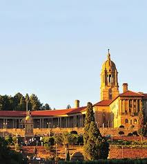

Christian Tshukudu

Pretoria
Pretoria is one of South Africa’s three capital cities, serving as the seat of the executive branch of government, and as the host to all foreign embassies to South Africa. Pretoria straddles the Apies River and extends eastward into the foothills of the Magaliesberg mountains. It has a reputation as an academic city and center of research, being home to the Tshwane University of Technology (TUT), the University of Pretoria (UP), the University of South Africa (UNISA), the Council for Scientific and Industrial Research (CSIR), and the Human Sciences Research Council. It also hosts the National Research Foundation and the South African Bureau of Standards. Pretoria was one of the host cities of the 2010 FIFA World Cup. Pretoria is the central part of the Tshwane Metropolitan Municipality which was formed by the amalgamation of several former local authorities, including Centurion and Soshanguve. Some have proposed changing the official name from Pretoria to Tshwane, which has caused some public controversy.
Foreign Languages
| English(Hello) | German(Hallo) |
| English(Thank you) | German(Danke) |
| English(How are you) | German(Wie geht es dir) |
Historical Places
Freedom Park Heritage site

Freedom Park is situated on Salvokop in Pretoria. It includes a memorial with a list of the names of those killed in the South African Wars, World War I, World War II as well as during the apartheid era
Kruger Museum

It is a modest, single storied building with a wide verandah. The house was presented in 1884 to Paul Kruger, by the volk, and here he held open court, receiving his people in informal fashion on the stoep.
Voortrkker Monument

The Voortrekker Monument is located just south of Pretoria in South Africa. This massive granite structure is prominently located on a hilltop, and was raised to commemorate the Voortrekkers who left the Cape Colony between 1835 and 1854